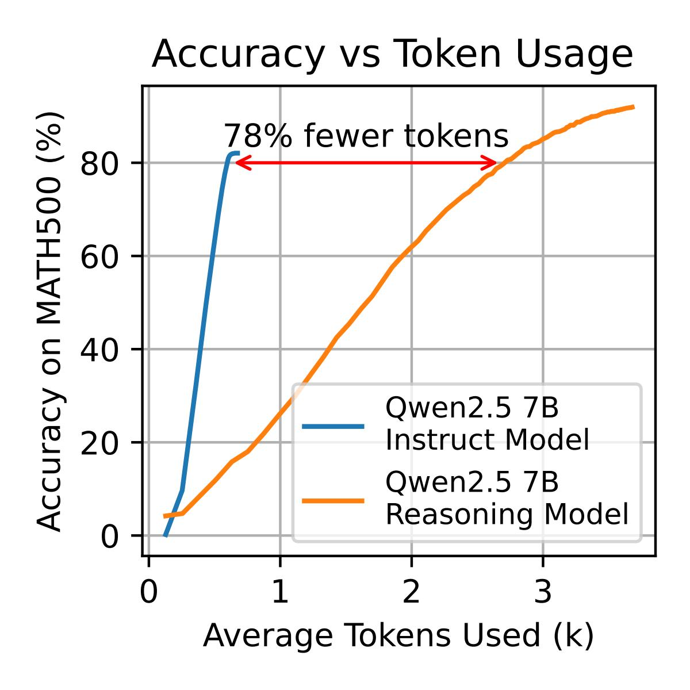
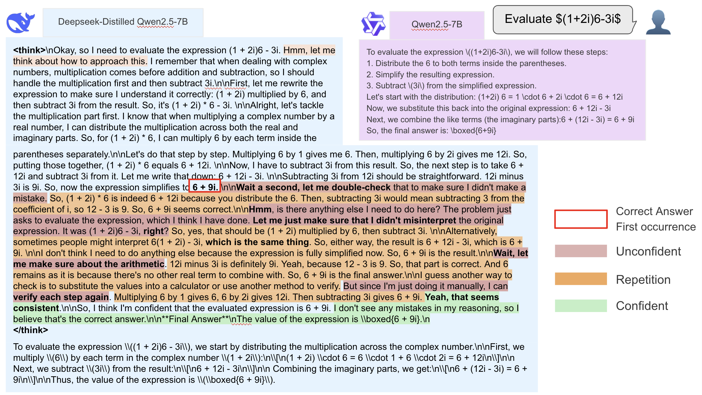
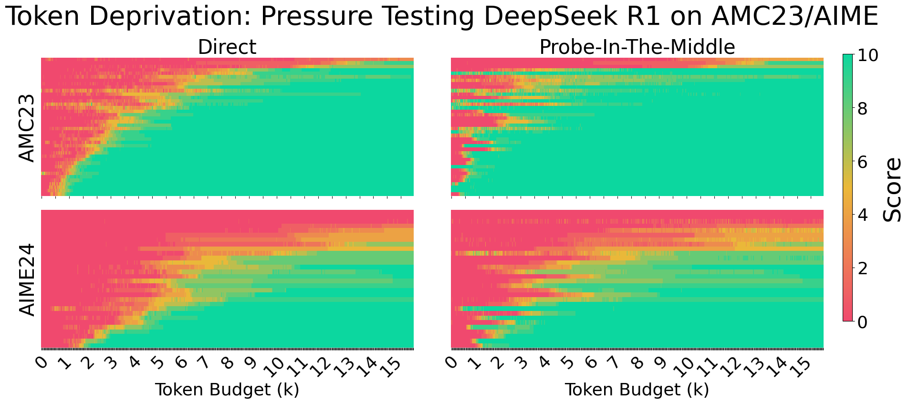
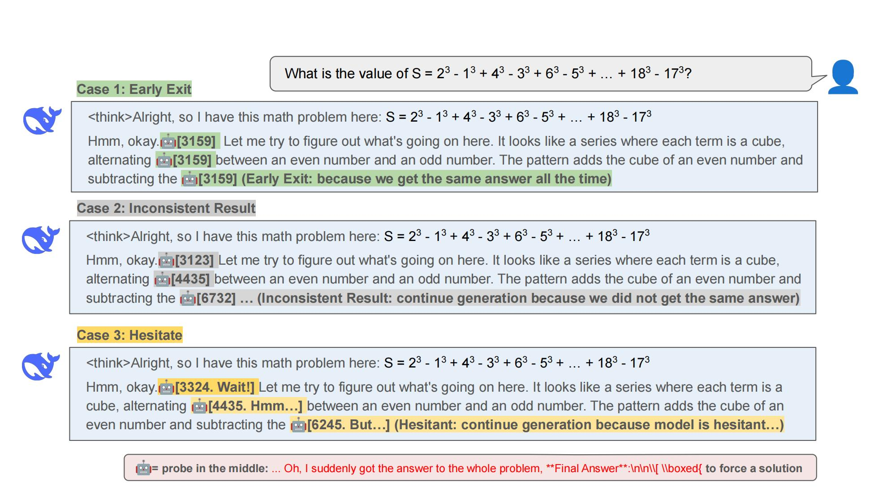
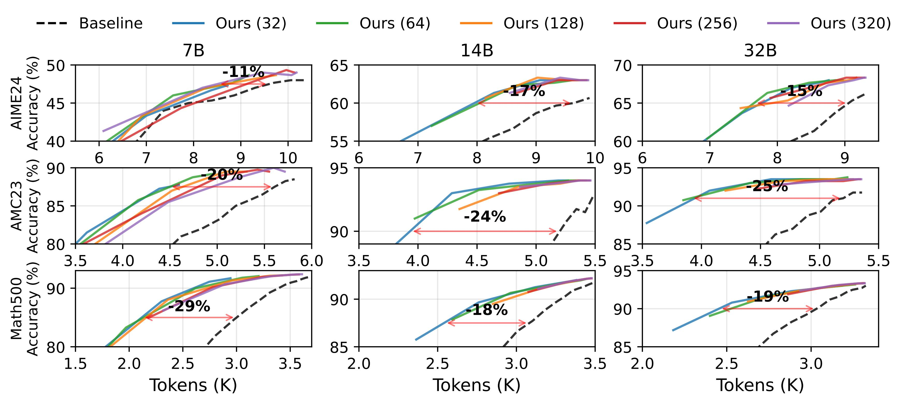
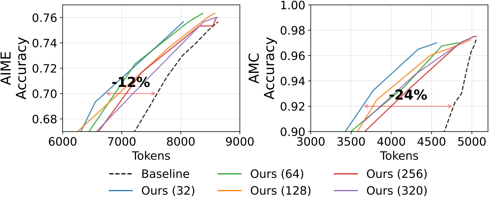

TL;DR: We observe reasoning models often exhibit poor token efficiency: they waste many tokens second-guessing themselves. We develop Dynasor-CoT, a certainty-based approach for dynamically allocating inference compute for reasoning models. The intuition is that by probing reasoning models at intermediate steps, we can identify and early terminate problems where they maintain consistently high certainty in their answers. The method is plug-and-play, requiring no model modifications or training, but matches baseline accuracy on benchmarks like AMC23, AIME24, and MATH500 while reducing token consumption by 29% dataset-wide and up to 81% for single problems.
LLMs with extended Chain-of-Thought (CoT) reasoning, such as DeepSeek-R1 and OpenAI o1/o3, excel at complex math and code. However, they exhibit markedly lower token efficiency – requiring more tokens to achieve the same accuracy as earlier models – as shown in Figure 2.

Figure 2: The token efficiency curve for the traditional model is much steeper than reasoning model.
One major source of this inefficiency stems from our observation that LLMs hesitate, a phenomenon we call self-doubt: models often reach the correct answer early but engage in extended verification behaviors such as double-checking, reassessment, re-verification, and so on. Such self-doubt patterns can lead to significantly increased token consumption. For instance, Figure 3 compares the traditional Qwen-7B model with a reasoning Deepseek-distilled Qwen-7B model on a simple question. While the traditional model reaches its answer in 180 tokens, the reasoning model expends 1K tokens on iterative verification steps but already got the correct answer at token 340.

Figure 3: An example answer from reasoning model (Deepseek-distilled Qwen-2.5 7B) vs traditional model (Qwen-2.5 7B) on one of the problem in MATH500 dataset.
To systematically investigate this phenomenon, we developed a “Probe-In-The-Middle” technique (or “Probe” for short) that extracts the model’s intermediate thinking by appending specific prompts such as “Oh, I suddenly got the answer to the whole problem, Final Answer: boxed{”. Figure 4 shows the analysis of the accuracy comparing directly asking vs probing the model. Taking AMC23 as an example, reasoning models frequently arrive at correct answers early (median: 830 tokens), but continue generating unnecessary tokens due to self-doubt (median: 2.7K tokens). This self-doubt phenomenon significantly impacts token efficiency, as models continue reasoning despite having internal confidence in their answers. Our key insight is that LLMs exhibit detectable levels of certainty during their reasoning process, which can be leveraged to determine effective stopping points.

Figure 4: DeepSeek R1 performance on AMC23 and AIME24 (lowest to highest scores over 10 attempts) at varying token budgets. (Left) Standard reasoning with late answer outputs. (Right) Early answer extraction using Probe-In-The-Middle technique, demonstrating equivalent accuracy with 50% token reduction. The intuition from these heatmaps is that greener regions at the same token budget indicate earlier arrival at correct answers - the notably greener right panels suggest the model actually knows the answers much earlier than shown in standard reasoning.
To address self-doubt, we propose Dynasor-CoT, a training-free, least intrusive, but simple approach for long CoT reasoning. Our method combines certainty-based heuristics with the probe-in-the-middle technique to dynamically determine termination points. This approach efficiently truncates reasoning chains while maintaining accuracy, demonstrating significant improvements over fixed-token-budget baselines. Notably, it achieves up to 29% token reduction without compromising accuracy or requiring additional training and introduces no extra latency to the critical reasoning path.
Dynasor-CoT: Efficiently Scaling Long Chain-of-Thought Reasoning#
Dynasor-CoT improves token-to-accuracy efficiency in long CoT LLM reasoning through three key mechanisms: answer extraction by probe, certainty assessment, and post-generation validation. Figure 5 shows an example of our methods.

Figure 5: Illustration of Dynasor-CoT: (1) Probe-In-The-Middle for answer extraction, (2) early exit based on certainty (case 1), (2) post-generation validation for hesitation words (e.g., wait) (case 3), and (4) continue if not certain enough (case 2)
Instead of waiting for complete reasoning chains, we introduce strategic interventions called Probe-In-The-Middle (or probe in short) during the generation process. Our approach appends carefully designed guidance at intermediate stages of reasoning to explicitly elicit the model’s current answer (e.g., “Oh, I suddenly got the answer to the whole problem, Final Answer: boxed{”). This method capitalizes on our observation that reasoning LLMs often reach the correct solution before completing their full reasoning chain. When the LLM has already reached its conclusion internally, this early extraction technique significantly reduces computational costs.
We implement a dynamic certainty assessment mechanism that monitors the model’s outputs at regular intervals (e.g., every 32, 64, or 128 tokens). At each interval, we probe the model to extract and store the current answer, then allow the LLM to continue its generation. Importantly, the subsequent generation remains unaffected by the probing tokens, enabling parallel execution of answer extraction and original generation. When the model produces consistent answers across multiple intervals, we interpret this pattern as an indicator of certainty, following the certaindex approach Dynasor. This methodology provides a quantitative measure of the model’s certainty.
We empirically observed DeepSeek-R1 and DeepSeek-Distill models’ generations and identified that they generate specific words like “wait” or “hmm” when lacking certainty in their previous generations. Based on this finding, we specifically monitor for these uncertainty indicators following probed answers. Responses containing these indicators are automatically discarded. This validation mechanism works in conjunction with the certainty assessment to create a comprehensive certainty metric. Figure 5 shows an example.
These three components operate synergistically to optimize the token-to-accuracy trade-off. At regular intervals, the framework injects probe words after the current generation to extract the model’s answer at that reasoning stage. It then discards answers that exhibit low certainty indicators. Finally, it terminates the process early if answers remain consistent across several consecutive intervals. This approach leverages the model’s ability to reach conclusions during intermediate stages while maintaining robust safeguards against premature or uncertain responses. Our method requires no additional training or model changing, making it readily applicable to existing LLM deployments.
Certaindex: Generalize To More Reasoning Algorithms#
Building upon our exploration of Chain-of-Thought reasoning, where we discovered that measuring model certainty could effectively reduce computational costs, a broader question emerged: Could this approach to quantifying certainty extend beyond a single reasoning algorithm to benefit LLM reasoning more generally?
Our investigation across commonly adopted reasoning algorithms - from Self-Consistency (SC) to Monte Carlo Tree Search (MCTS) - revealed a promising pattern that led to the development of Certaindex. This generalized metric quantifies model certainty across various LLM reasoning methods by leveraging two key indicators: semantic entropy and reward model scores. By serving as a simple yet effective proxy for model confidence, Certaindex enables dynamic resource allocation and informed early termination decisions while maintaining accuracy across different reasoning algorithms.
Dynasor: System For LLM Reasoning Built Upon Certaindex#
Dynasor is a system optimized for LLM reasoning algorithms, built upon the Certaindex proxy variable. It introduces a reasoning program abstraction to formalize the structure of reasoning tasks. The application runtime handles intra-program scheduling and dynamically allocates resources based on Certaindex statistics, while the system runtime manages request scheduling and prefix cache optimization across multiple programs. The architecture, as shown in the figure 6, enables efficient resource allocation through the interplay between local application components and server-side system management. See our paper for more details about Certaindex and Dynasor!
We evaluate our certainty-based early termination method Dynasor-CoT against baseline uniform token allocation across multiple scales of distilled DeepSeek models (7B, 14B, and 32B) on mathematical reasoning benchmarks AIME24 and AMC23, and MATH500. Unlike the baseline approach that uniformly increases token budgets, our method enables early termination by monitoring model certainty at various intervals. As illustrated in Figure 6, we evaluate variable probing intervals (32, 64, and so on) represented by distinct colored lines, with a maximum token budget of 16K. For each interval, we vary the early termination parameter N (the required number of consecutive consistent answers), generating different points along each line. All configurations achieve significant token savings, with our approach reducing token usage by up to 29% while maintaining comparable accuracy to the baseline. For fair comparison, appropriate accuracy thresholds were calibrated to model scale - with 32B models evaluated against stricter thresholds above QwQ levels and reduced thresholds for smaller models - while setting higher targets for simpler tasks where greater accuracy is achievable.

Figure 7: Comparing Dynasor-CoT Performance Across Model Scales and Datasets
For the 10% of problems where our method achieves the highest token reduction, we observe savings of 34% on AIME and 53% on MATH500. This extends further for the top 1% of problems, where we achieve even more substantial reductions of 53% on AIME and 81% on MATH500. These results, particularly the substantial token savings on certain problems (up to 81% reduction), demonstrate our method’s ability to adapt token allocation to different problem types. This variable performance shows the advantage of our dynamic approach over fixed token budgets, as problems vary in their token requirements for reaching solutions.

Figure 8: Applying Dynasor-CoT on DeepSeek-R1
To validate scalability, we extended our experiments to the larger DeepSeek-R1 model on AIME and AMC datasets (Figure 8). The results align with our findings from smaller distill models, demonstrating consistent efficiency gains: DeepSeek-R1 achieves 12% token savings on AIME problems and 24% on AMC problems while maintaining baseline accuracy levels.
We would like to thank Jishen Zhao, Lanxiang Hu, Vikranth Srivatsa, Runlong Su, Peiyuan Zhang, Siqi Zhu, Zhongdongming Dai for providing insightful feedback.
@article{fu2024efficiently,
title={Efficiently Serving LLM Reasoning Programs with Certaindex},
author={Fu, Yichao and Chen, Junda and Zhu, Siqi and Fu, Zheyu and Dai, Zhongdongming and Qiao, Aurick and Zhang, Hao},
journal={arXiv preprint arXiv:2412.20993},
year={2024}
}